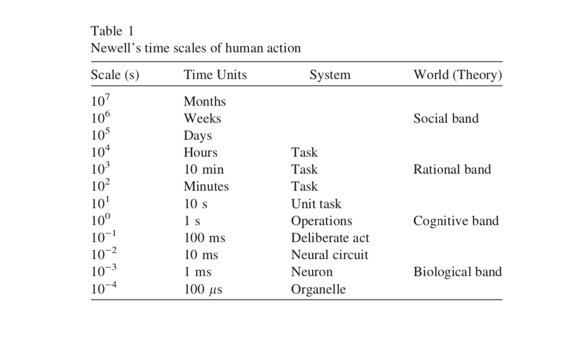
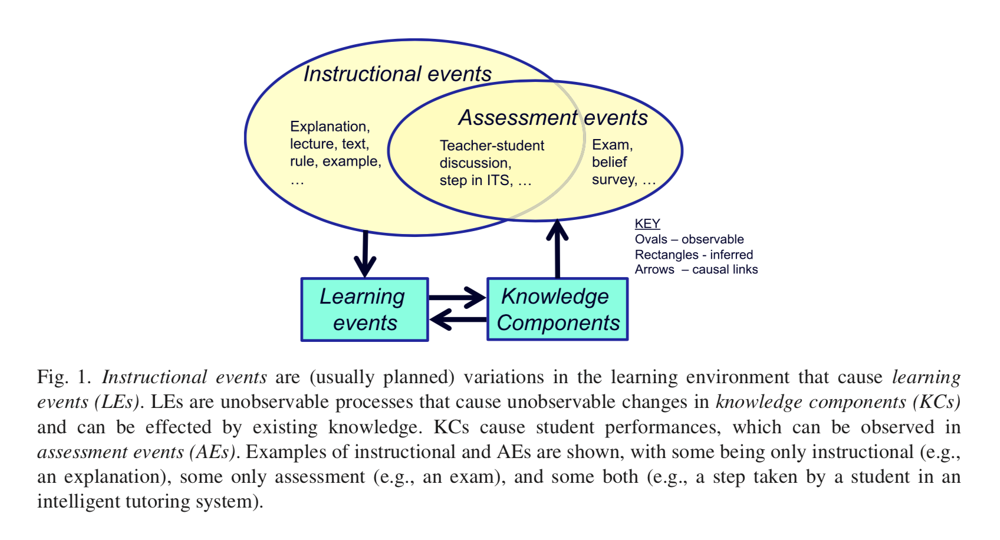
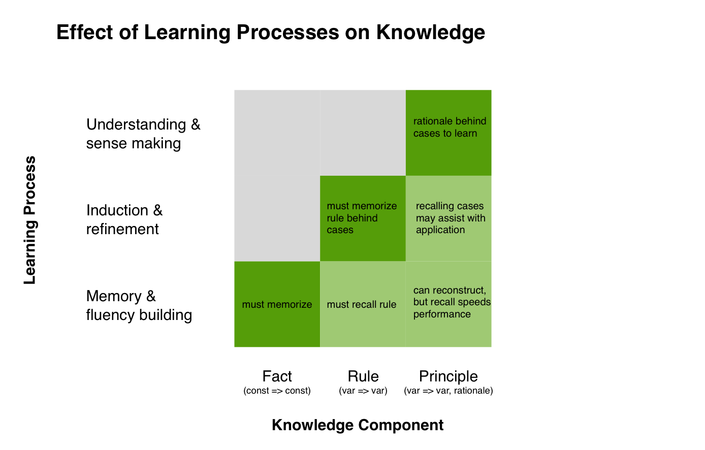
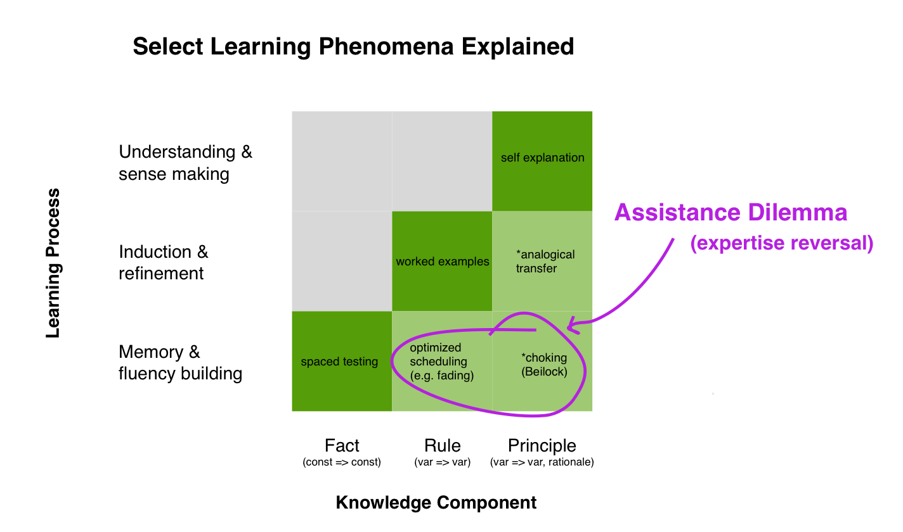
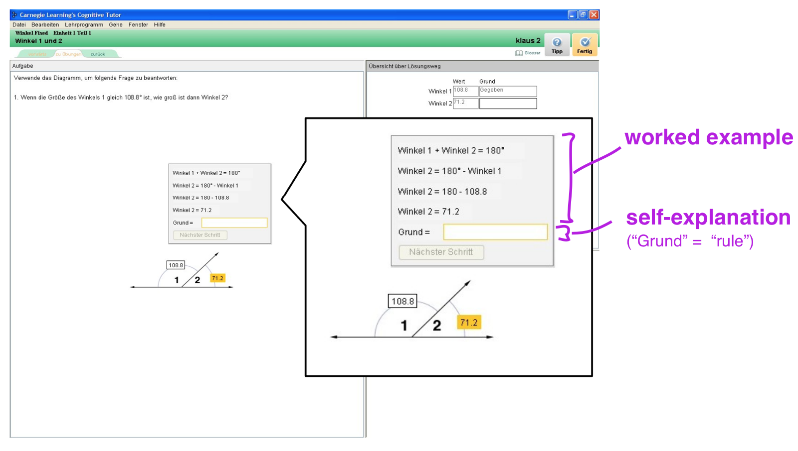

(DRAFT) Three Contrasting Views in Education Research
October 11, 2020 by Michael Chow
Over the past several years, while designing skill assessment tools, I’ve stewed on something that might seem obvious: educational and cognitive psychology are distinct fields. Researchers in these fields often go to different conferences, cite different people in their papers, and sometimes use the same concept in ways foreign to the other field.
This may boil down to differences in approach:
- Cognitive psychologists often use laboratory studies with simple materials (e.g. memorize this list of words). They are precise, controlled, and not always realistic.
- Educational psychologists often use more naturalistic studies with complex materials (e.g. a study wrapped around a college course). They are realistic, but at the cost of control.
Recently, I’ve been thinking about three areas in education research where these differences are mentioned and discussed. In my mind this intersection is the most interesting part of education, and a good starting point for people looking to get a lay of the broad educational landscape.
In this series of posts I’ll discuss three contrasting views:
- Rigor vs Relevance: Two frameworks attempt to bridge cognitive and educational psychology. Cognitive Load Theory focuses on generating instructional techniques that are educationally relevant, while the Knowledge-learning-instruction framework aims to allow translating problems “downward” to theories of cognition. (Sweller et al., 2019; Koedinger et al., 2012)
- Testing Effect vs Worked Examples: When should a student receive a test problem to solve, versus a worked out example to study? A journal issue in 2015 dedicated to this topic questioned how useful testing is for complex skills: “the testing effect is a finding from cognitive psychology with relevance for education. … Studies presented in this special issue suggest the effect may even disappear when the complexity of learning material is very high.” (van Gog and Sweller, 2015)
- Professional Competence vs Expertise: In many complex domains even people accepted as “experts” exhibit poor or unreliable performance. This is an issue to the extent that the expert performance literature has studied relatively simple domains. (see Thomas and Lawrence, 2018; Kahneman and Klein, 2009)
This post will focus on the first issue–rigor vs relevance–which is expliclitly discussed across a number of papers.
Rigor vs Relevance
The tension between rigor and relevance in psychological research is visible in every area I’ve seen. Often, in order to easily repeat an experiment–or even a measurement within an experiment–you need to control the stimuli used and constrain what actions people can perform. However, the real world is full of highly complex tasks that vary on many dimensions.
My favorite pair of papers that highlight this tension in education are Koedinger, Corbett, and Perfetti (2012), and Sweller and Chandler (1991; see also Sweller, van Merrienboer, Paas, 2019).
Koedinger’s paper is out of intelligent tutoring systems–a field that includes many cognitive psychologists–and summarizes the history of rigor vs relevance well:
A substantial base of highly refined and extensively tested theories of cognition and learning (...) provide broadly useful, but limited guidelines for instruction. Theoretical frameworks and design methods have been proposed that are directly relevant to instructional decision making (...). However, we need instructional applications that are more grounded in cognitive theories that explicate the role in learning of basic cognitive science concepts. (emphasis added)
Note that here the concepts of theory and framework are important. In the paper, a framework is not a theory because it does not “lead directly to precise predictions” (p. 760), but can be elaborated with assumptions in order to become a theory. This doesn’t mean frameworks are bad, and the goal of Koedinger’s paper is to produce a framework that allows researchers to produce theories that both connect with theories of cognition, and are relevant to instruction in realistic settings.
Theories, Frameworks, and Cognitive Models
The most notable example of a framework mentioned in Koedinger’s paper is likely Bloom’s Taxonomy, but Cognitive Load Theory–as reviewed by Van Merrienboer and Sweller (2005)–is noted as also being a framework, rather than a theory.
In the Koedinger paper, they introduce the concepts of rigor and relevance (p. 758) as different kinds of scientific support researchers might value:
| rigor | relevance |
|---|---|
| internal validity | ecological / external validity |
| randomized controlled experiments | appropriate settings and assessments |
They emphasize that whereas studies focused on relevance often measure performance after whole tasks (e.g. after minutes of activity), a key to connecting back to cognitive processes is to measure on the order of seconds. A nice illustration they use comes from Newell’s time scales of human action:

A big job served by frameworks is to help bridge between timescales (and connect researchers focused on specific timescales). In this sense, both Cognitive Load Theory (framework) and the KLI framework take ideas abut low-level cognitive processes and give guidance for how they could be applyed to questions about instructional design.
At the end of the day, the value of a framework is settled not on its truthfulness, but its usefulness. I think of usefulness in terms of people on either side of the cognitive band: the cognitive psychologists with process models of cognition, and education researchers who need to design instruction in diverse and complex settings.
The best way to get a feel for these frameworks is to read the papers themselves, but to give a feel for how they compare, I’ll briefly describe them below, followed by one issue where they’ve been compared–the worked example effect.
Two Frameworks of Cognition and Complex Learning
In the following sections I’ll discuss Cognitive Load Theory (CLT; Sweller and Chandler, 1991) and the Knowledge-learning-instruction framework (KLI Framework; Koedinger et al., 2012), each with an emphasis on three key points:
- The framework’s main goal
- How it relates cognition and instruction
- Its strengths and limitations
In the hope of making it easier to develop an understanding of the two frameworks side-by-side, I’ve included summary descriptions below.
| Framework | Description |
|---|---|
| Cognitive Load Theory | Our limited-capacity working memory builds and employs cognitive schemas stored in long-term memory during instruction. Working memory resources engaged (cognitive load) in schema building fall into one of three categories: intrinsic, extrinsic, or germane load. When elements of a task interact they increase its complexity, raising cognitive load. |
| KLI Framework | Types of knowledge can be expressed in terms of mapping an application condition (input) to a response. Simple fact knowledge maps a constant condition to a constant response. More complex knowledge–like rules–map variable conditions to variable responses. Knowledge may also be non-verbal, or contain a rationale. Types of knowledge gaps tend to progress from those focused on memory, to induction (e.g. schema induction, generalization), to understanding. |
Cognitive Load Theory
Sweller and Chandler (1991) nicely explain the goal of Cognitive Load Theory:
Scientific theories can have a variety of functions and goals. A better understanding of various phenomena is probably the most common justification for a theory; accurate prediction is another. In cognition and instruction, we do not have the luxury of choosing between various goals. There can be only one ultimate goal: the generation of new, useful instructional techniques.
The main challenge they saw was that researchers were testing models of cognitive and instructional processes, and making suggestions for instruction, but were ultimately not testing the instructional suggestions.
Their Cognitive Load Theory provides a simple account of how two memory systems–working memory and long term memory–operate during instruction. In their account, working memory is a system to actively hold information in memory, but has a limited capacity. In contrast, long term memory can effectively hold information without limits. The theory focuses on the role of long term memory in creating, using, and enhancing cognitive schemas.
More on schemas
A cognitive schema can be thought of as a process that can take different, even never encountered situations and map them onto a response. For example, in the previous paragraph I used the term “schemas”, but a more standard pluralization might be “schamata”. I know that by default many words can be pluralized by adding an “s” to the end, as well as knowing many exceptions to that rule.
Another useful demonstration of schemas comes from Brewer and Treyens (1981; described in Anderson, 2015), and involved showing participants different rooms, then having them recall their contents from memory.

Depending on the “kind” of room, we might expect to see different things, and this will shape our subsequent memory. In the experiment, participants were told it was the office of the experimenter, so almost always recalled objects that could be thought of as default or standard for this kind of office–e.g. a chair, a desk–but not other objects in the room–e.g. that it had a bulliten board.
Similarly, whether a person is working as a plumber or surgeon, they need to use schemas of not only physical space (the pipes under your sink, a person’s intestines), but also how they operate in order to solve complex problems. No two problems will present in the same way.
Types of Cognitive Load
So far, we’ve focused on long term memory and schemas. The “cognitive load” in Cognitive Load Theory refers to how the limited capacity of working memory is used during a learning task. It wants to divide cognitive load into three categories:
- Intrinsic load: necessary for the task at hand.
- Extrinsic load: unecessary, brought on by factors like instructional design choice.
- Germane load: employed in building robust schemas that will generalize across a range of situations.
This simple, but insightful conceptualization of working memory engagement during instruction has led to the discovery of / increased support for many important effects in instructional design.
Strengths and Limitations
The theory has led to the discovery or emphasis of many influential instructional techniques.
- Goal free effect: setting up a problem that doesn’t have a concrete goal / final answer. With concrete goals, novices use ineffective means-ends strategies. That is, they maintain in working memory both the problem and goal states, as well as relations between them. By removing the goal, students can focus stricly on problem state operations.
- Worked examples: giving a worked out example for study rather than a problem to solve. An example facilitates early schema construction by focusing “learners’ attention on problem states and associated operators (i.e. solution steps), enabling them to induce generalised solutions.” (Sweller, van Merrienboer, and Paas, 2019)
- Expertise reversal: the techniques mentioned above are effective for novices, but receiving a problem to solve is more effective for non-novices. The rationale is that non-novices have developed schemas in long-term memory to handle problem representation and solving procedures (which requires no / less cognitive load).
Moreover, it seems like colleagues in the educational tech industry (or just the tech industry in general) find the basic ideas of Cognitive Load Theory to be incredibly intuitive (face validity) and appealing. That seems like an incredibly important, healthy sign.
The two major limitations of Cognitive Load Theory seem to be:
- Ambiguous definitions, unclear measurement, and a risk of post-hoc explanations.
- Sometimes hard to translate back down to the working memory literature in cognitive psychology.
The first limitation is laid out well by de Jong (2009). He points out that cognitive load is often measured using a subjective load questionairre, and that the rationale for germane and exstrinsic load may have logical issues:
Paas et al. (2004, p. 3) present the following distinction: “If the load is imposed by mental activities that interfere with the construction or automation of schemas, that is, ineffective or extraneous load, then it will have negative effects on learning. If the load is imposed by relevant mental activities, i.e., effective or germane load, then it will have positive effects on learning.” The first issue apparent in this definition is its quite tautological character (what is good is good, what is bad is bad). (emphasis added)
This is also emphasized in Koedinger and Aleven (2007), who point out that a rationale similar to the one above “begs the question of what forms of instruction yield extraneous versus germane load” (p. 242). A related concern raised by researchers is that the theory lacks measurement for its essential constructs, like cognitive overload (de Jonge, 2009) and element interactivity (Karpicke, 2015).
The second limitation–being hard to connect back to cognitive psychology’s working memory literature–is one that I’ve thought about over the last decade. While researching working memory for my Ph.D., I knew that this Cognitive Load Theory existed, but had trouble figuring out what parts of the working memory literature it was using (cognitive load is one way to summarize the interaction between attention and memory).
I think the quickest way to view this challenge is to look at two wikipedia pages that discuss cognitive load. The first page, cognitive load often cites Sweller and colleagues but not cognitive psychologists who extensively study cognitive load (e.g. Barrouillet and Camos, 2004; for a review, see Barrioullet, Portrat, and Camos, 2011). In contrast, the page for working memory is the opposite, with no mention of Sweller et al.. A person going to one page or the other would get a very different picture of working memory and cognitive load.
While these limitations may seem like serious criticisms, it’s important to remember that Cognitive Load Theory is focused on validating and generating instructional techniques. To that end, I’ve come around to seeing these simplifications in the framework as largely strengths. Maybe it’s cutting out unecessary details, and using the working memory construct at a level of granularity that is most useful for validating and explaining instructional techniques that apply to complex situations.
In that vein, what is appealing about the Knowledge-learning-instruction Framework is that it aims to preserve the focus on generating / validating instructional techniques, while allowing downard translation of problems to cognitive models.
The KLI Framework
The goal of the KLI framework:
Education theories have tended to use macro levels of analysis with units at large grain sizes. For example, situated learning, following its origins as a general proposition about the social-contextual basis of learning (Lave & Wenger, 1991), has been extended to an educational hypothesis (e.g., Greeno, 1998). It tends to use a rather large grain size including groups and environmental features as causal factors in performance and to focus on rich descriptions of case studies. These features work against two important goals that we have. (Koedinger et al., 2012)
Here are the two goals from the same paper (reformatted as a list):
- Identifying mechanisms of student learning that lead to instructional principles
- Communicating instructional principles that are general over contexts and provide unambiguous guidelines to instructional designers.
I think a distinguishing feature of point 1, compared to CLT is their emphasis goes deeper than producing useful instruction techniques:
These propositions must be testable by experiments and allow translation, both downward to micro-level mechanisms and upward to classroom practices.
One way that the value of translating downward shows up is in an emphasis that I think cognitive psychologists are fond of, formal (read quantitative) models:
The ideal description language for KCs is a formal cognitive modeling language, such as an ACT-R production system (Anderson & Lebiere, 1998) or structure mapping theory (Gentner et al., 2009). But [Knowledge Component] descriptions in English may also serve this purpose particularly when closely guided by empirical cognitive task analysis methods, such as think alouds or difficulty factors assessments (Koedinger & Terao, 2002; Rittle-Johnson & Koedinger, 2001).
That is not to say that this makes the KLI framework more useful than a framework focused ultimately on instructional techniques. But it is definitely a goal I relate with as a cognitive psychologist (for better or worse).
What is the KLI Framework?
The crux of the knowledge-learning-instruction (KLI) framework is that a person learning from instruction is filling knowledge gaps, which must be inferred indirectly through assessment. The framework also identifies Learning Events, which are changes in cognitive processes (e.g. increased working memory load) that might support filling and interact with knowledge gaps.
A key research focus of the framework is the discovery and representation of knowledge (in a broad sense of the term; may be phrased as understanding or skill in other frameworks). The framework breaks down knowledge into what it calls knowledge components (KCs), which should be inferred through some kind of assessment.
Below is a figure from their paper that depicts the framework.

More on Knowledge Components
Knowledge Components can be thought loosely of as a way of decomposing a schema. Each KC contains an application condition (i.e. input) and response.
- fact (constant => constant). Seeing the Chinese character “日” and identifying it as “sun” (日 => “sun” in English).
- concept (variable => constant). The terms “cat”, “ball”, “idea” can be made definite by adding “the” beforehand: “the cat”, “the ball”, “the idea”. This is taking an input
and responding by putting “the” before it. The response strategy is the same regardless of input. - rule (variable => variable). Some terms above can be made indefinite, by using “a” beforehand. However, it’s not that simple. If the condition starts with a vowel you might have to use “an” instead. “a cat”, “a ball”, “an idea”.
In addition to application condition and response, they distinguish between whether the knowledge can be verbalized. For example, a person who has non-verbal knowledge might be able to make indefinite nouns like “an idea”, but not say what the rule is. Keep in mind that their definition here means one and not the other, so verbal knowledge means they can say the rule but cannot do it. Thus, knowledge can be verbal, non-verbal, or both. This emphasis is noteworthy as there is a great deal of research distinguishing declarative memory (loosely corresponding to their verbal) and procedural memory (loosely their non-verbal). Indeed, this distinction is important in theories of working memory (see Postle and Oberareur for a review).
A final dimension they consider is whether or not a KC contains a rationale. That is, can it be derived or worked out based on other KCs? For example, they mention finding the area of a triangle, given its base and height. A person may be able to reconstruct the rule for a triangle’s area, based on other pieces of knowledge.
Learning process: memory, induction, and understanding
While KCs together represent the knowledge structure underlying skilled performance, learning processes describe the cognitive states and activites that lead to learning events, or the filling in of knowledge gaps.
In the KLI FrameworkKoedinger et al. (2012) emphasize 3 learning processes (order from least to most complex):
- Memory & fluency: the basic storage and retrieval of memories (including non-verbal procedures).
- Induction & refinement: the creation of schemas, elaborating them to fit a range of application conditions.
- Understanding & sense making: working out rationales, learning how KCs interact to solve problems.
The interaction of learning processes and knowledge components is illustrated in the figure below (derived from table 4 in Koedinger et al.).

Strengths and Limitations
A major strength of the KLI Framework comes from its ability to analyze instructional principals at a finer, knowledge component grain (i.e. seconds vs minutes). For example, earlier in this post I mentioned the worked example effect, where showing students a worked out solution tends to be more effective than giving them a test problem to solve. Koedinger (2012) interpret the value of worked examples in terms of learning processes and knowledge components.
For learning processes:
- Memory & fluency: prevent students from applying and reinforcing incorrect knowledge.
- Induction & refinement: fill complex, variable-variable KCs (i.e. use cases to build schemas).
- Understanding & sense making: see the entire solution, in order to make sense of each step.
For KCs:
- fact learning (constant => constant): test is effective because there is nothing to induce.
- More complex KCs like rules (variable => variable): “worked examples are better early to support induction and testing is better later to support memory and fluency.”
The figure below shows how learning processes and KCs might interact to produce instructional effects:

Note that on the diagonal (dark green) are where learning processes (y-axis) and KCs (x-axis) interact to produce classic effects like the test effect, worked examples, and self-explanation are commonly observed.
On the bottom row, the circled effects are conditions where the effects on the diagonal sometimes aren’t observed or reverse, depending on knowledge levels (i.e. expertise reversal).
The first circled effect. Optimal sequencing refers to how and when to switch from worked examples to test problems (e.g. through faded examples; possibly adaptive). The worked example effect and expertise reversal is discussed in detail by Salden et al. (2010), who review a line of studies examining when and how to fade from worked examples to test problems. I won’t describe it in detail, but show one task they used below, to give a sense for what they look like. They used a geometry tutor, which combined worked out steps, with an input for self-explanation on the rule the steps were applying.

The second circled effect. Choking under pressure refers to research on how pressure-filled situations can decrease performance. Interestingly, there are two explanations for why this occurs: one for tasks that require attention, and one for tasks where attention hinders skilled performance. The second kind of task is described as a procedural learning task, which corresponds to the more complex, non-verbal KCs described here. Intriguingly, Beilock et al. (2002) found that–for students dribbling through a slalom course–explicitly monitoring the side of the foot touching the ball helps novices, but hinders skilled performers (compared to monitoring something outside the task at hand).
While I find downward translation to cognitive psychology appealing, the potential limitations of the KLI Framework seem to hinge on how easy and appealing it is to instructional designers. Cognitive Load Theory has enjoyed incredible success. Based on informal conversations with coworkers who are curious about education research, it seems like Cognitive Load Theory is much easier to explain.
A related concern I have is around the challenge of implementing intelligent tutoring systems, described well in the article Stupid Tutoring Systems, Intelligent Humans by Baker (2016): “First of all, automated interventions can be time-consuming to author. Researchers seldom report how long it took them to develop new interventions, but authoring an entirely new behavior for a pedagogical agent is not cheap”. It seems like to the degree that research using the KLI Framework uses intelligent tutors, its relevance to educators depends in part on whether they can access or reproduce those tutors.
Next post: the test effect vs worked examples
In my next post, I’ll cover an area where perspectives from cognitive and educational psychology came into (healthy) conflict. Essentially, researchers using CLT questioned the relevance of a commonly discussed finding in cognitive psychology–the test effect.
The testing effect is a finding from cognitive psychology with relevance for education. It shows that after an initial study period, taking a practice test improves long-term retention compared to not taking a test and—more interestingly—compared to restudying the learning material. … Another potential boundary condition concerns the complexity of learning materials, that is, the number of interacting information elements a learning task contains. … . Studies presented in this special issue suggest that the effect may even disappear when the complexity of learning material is very high. Since many learning tasks in schools are high in element interactivity, a failure to find the effect under these conditions is relevant for education. (van Gog and Sweller, 2015)
Critically, subsequent research has tapped into CLT and the KLI Framework to continue the discussion, and recent meta-analyses on the test effect may help clarify the conditions where it appears.
Summary
This post discussed rigor vs relevance, and two attempts to carry low-level cognitive psychology research into education.
The first, Cognitive Load Theory (CLT) emphasizes the role of a specific facet of working memory–cognitive load–and long term memory, and ultimately aims to generate effective instructional techniques. The second, the Knowledge-learning-instruction Framework (KLI framework) emphasizes kinds of knowledge involved in a task (e.g. application conditions, verbal/non-verbal, rationale) , and the breakdown of complex skill into knowledge components. The KLI Framework aims to translate problems not only upward to instructional techniques, but also downward to theories of cognition.
A key tension in the issue of rigor vs relevance is highlighted by Newell’s timescale of activity. Cognitive theories often operate on the timescale of seconds (e.g. a memory retrieval; an attention shift), while instructional activities often occur on the order of minutes (e.g. going through a worked example). A major challenge for frameworks bridging these two sides of the “cognitive band” is in finding rigorous measurements of cognitive processes that are relevant to complex, real-world learning.
For questions, discussions, or corrections to this post, please reach out on twitter (@chowthedog).
Key references and study paths
- Sweller, J., van Merriënboer, J. J. G., & Paas, F. (2019). Cognitive Architecture and Instructional Design: 20 Years Later. Educational Psychology Review, 31(2), 261–292. https://doi.org/10.1007/s10648-019-09465-5
↑ Review of Cognitive Load Theory by some of its core contributors.
- van Gog, T., Kester, L., & Paas, F. (2011). Effects of worked examples, example-problem, and problem-example pairs on novices’ learning. Contemporary Educational Psychology, 36(3), 212–218. https://doi.org/10.1016/j.cedpsych.2010.10.004
↑ Experiments on when it’s better to show worked out examples, vs problems to solve, or how to order them.
- DeCaro, M. S., Thomas, R. D., Albert, N. B., & Beilock, S. L. (2011). Choking under pressure: Multiple routes to skill failure. Journal of Experimental Psychology: General, 140(3), 390–406. https://doi.org/10.1037/a0023466
↑ Experiments from cognitive psychology on why people choke under pressure. Critically, they focus on two situations: one where attention control is needed to improve performance, and one where attention control hinders performance. Performance in the second task is noted as relying on the procedural learning system. Note that they don’t use the construct of cognitive load, but do use related language (e.g. “high-pressure situations coopt attentional resources”).
- De Jong, T. (2010). Cognitive load theory, educational research, and instructional design: Some food for thought. Instructional Science, 38(2), 105–134.
↑ Some important critiques of Cognitive Load Theory.
- Barrouillet, P., Portrat, S., & Camos, V. (2011). On the law relating processing to storage in working memory. Psychological Review, 118(2), 175–192. https://doi.org/10.1037/a0022324
↑ Review of experiments measuring cognitive load from a cognitive psychology perspective. Much of this work focuses on examining whether there is a trade-off between processing and storing information in working memory.
- Koedinger, K. R., & Aleven, V. (2007). Exploring the Assistance Dilemma in Experiments with Cognitive Tutors. Educational Psychology Review, 19(3), 239–264. https://doi.org/10.1007/s10648-007-9049-0
Poses the question of when to show a worked example vs a test problem, but also expresses it as a gradient, where worked examples can be faded into test problems (e.g. via an adaptive tutoring system).
- Koedinger, K. R., Corbett, A. T., & Perfetti, C. (2012). The Knowledge-Learning-Instruction Framework: Bridging the Science-Practice Chasm to Enhance Robust Student Learning. Cognitive Science, 36(5), 757–798. https://doi.org/10.1111/j.1551-6709.2012.01245.x
Core paper discussing the KLI Framework.
- Salden, R. J. C. M., Koedinger, K. R., Renkl, A., Aleven, V., & McLaren, B. M. (2010). Accounting for Beneficial Effects of Worked Examples in Tutored Problem Solving. Educational Psychology Review, 22(4), 379–392. https://doi.org/10.1007/s10648-010-9143-6
Review of a line of experimental work on faded examples. This research was a focus of the above paper.
- Baker, R. S. (2016). Stupid Tutoring Systems, Intelligent Humans. International Journal of Artificial Intelligence in Education, 26(2), 600–614. https://doi.org/10.1007/s40593-016-0105-0
Important self-reflection / critique of intelligent tutoring systems. e.g., “First of all, automated interventions can be time-consuming to author. Researchers seldom report how long it took them to develop new interventions, but authoring an entirely new behavior for a pedagogical agent is not cheap.”
All References
- Baker, R. S. (2016). Stupid Tutoring Systems, Intelligent Humans. International Journal of Artificial Intelligence in Education, 26(2), 600–614. https://doi.org/10.1007/s40593-016-0105-0
- Barrouillet, P., Bernardin, S., & Camos, V. (2004). Time Constraints and Resource Sharing in Adults’ Working Memory Spans. Journal of Experimental Psychology: General, 133(1), 83–100. https://doi.org/10.1037/0096-3445.133.1.83
- Barrouillet, P., Portrat, S., & Camos, V. (2011). On the law relating processing to storage in working memory. Psychological Review, 118(2), 175–192. https://doi.org/10.1037/a0022324
- Beilock, S. L., & Carr, T. H. (2001). On the fragility of skilled performance: What governs choking under pressure? Journal of Experimental Psychology: General, 130(4), 701.
- De Jong, T. (2010). Cognitive load theory, educational research, and instructional design: Some food for thought. Instructional Science, 38(2), 105–134.
- DeCaro, M. S., Thomas, R. D., Albert, N. B., & Beilock, S. L. (2011). Choking under pressure: Multiple routes to skill failure. Journal of Experimental Psychology: General, 140(3), 390–406. https://doi.org/10.1037/a0023466
- Kalyuga, S., & Singh, A.-M. (2016). Rethinking the Boundaries of Cognitive Load Theory in Complex Learning. Educational Psychology Review, 28(4), 831–852. https://doi.org/10.1007/s10648-015-9352-0
- Karpicke, J. D., & Aue, W. R. (2015). The Testing Effect Is Alive and Well with Complex Materials. Educational Psychology Review, 27(2), 317–326. https://doi.org/10.1007/s10648-015-9309-3
- Karpicke, J. D., & Roediger, H. L. (2008). The Critical Importance of Retrieval for Learning. Science, 319(5865), 966–968. https://doi.org/10.1126/science.1152408
- Koedinger, K. R., & Aleven, V. (2007). Exploring the Assistance Dilemma in Experiments with Cognitive Tutors. Educational Psychology Review, 19(3), 239–264. https://doi.org/10.1007/s10648-007-9049-0
- Koedinger, K. R., Corbett, A. T., & Perfetti, C. (2012). The Knowledge-Learning-Instruction Framework: Bridging the Science-Practice Chasm to Enhance Robust Student Learning. Cognitive Science, 36(5), 757–798. https://doi.org/10.1111/j.1551-6709.2012.01245.x
- Salden, R. J. C. M., Koedinger, K. R., Renkl, A., Aleven, V., & McLaren, B. M. (2010). Accounting for Beneficial Effects of Worked Examples in Tutored Problem Solving. Educational Psychology Review, 22(4), 379–392. https://doi.org/10.1007/s10648-010-9143-6
- Sweller, J., & Chandler, P. (1991). Evidence for Cognitive Load Theory. Cognition and Instruction, 8(4), 351–362. https://doi.org/10.1207/s1532690xci0804_5
- Sweller, J., van Merriënboer, J. J. G., & Paas, F. (2019). Cognitive Architecture and Instructional Design: 20 Years Later. Educational Psychology Review, 31(2), 261–292. https://doi.org/10.1007/s10648-019-09465-5
- van Gog, T., & Sweller, J. (2015). Not New, but Nearly Forgotten: The Testing Effect Decreases or even Disappears as the Complexity of Learning Materials Increases. Educational Psychology Review, 27(2), 247–264. https://doi.org/10.1007/s10648-015-9310-x